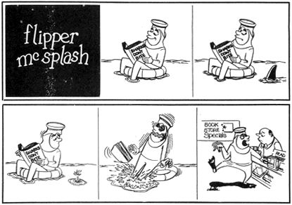

When I'm not going off at a tangent by getting myself involved with selling advertising space for various local magazines or animated signs or any other fast-buck deal that looks sufficiently interesting to lure me from the oftimes lonely drawingboard and typewriter, I usually produce freelance material in three main forms: (1) Advertising cartoons, (2) Entertainment cartoons and (3) Humor pieces.
However, since I've done my share of howling estatically over the value of the ad cartoon - and since there are not likely to be many would-be humorous article or story writers in the IG audience - I think I'll stick to the single-panel gag cartoon in this diatribe.
To be begin, I reluctantly admit I have no supremely masterful method of formulating gags. In fact, my gag writing is rather a chaotic process: Something of a blemish upon my alleged professionalism if you consider that I have been hawking cartoons long enough to have whomped up some sort of systemized gag production.
Anyway, I simply: (A) Choose the magazine I intend to hit, (B) Study it thoroughly, being quite certain to read the editorial section for slant and the ads for double slant and (C) Start working out gag situations based upon (generally speaking) some of the material already published in the magazine.
Take the FISHERMAN MAGAZINE, for instance. I first sold to them just last year. After studying a copy of that book, I sat me down behind the lightboard and stared a neat hole in a clean sheet of paper. I quietly considered the editorial articles (freshwater fishing, saltwater fishing, types of gear used, boat handling, etc.), the advertising (rods, reels, hooks, lures, sinkers, boats, lines, etc.) and I mentally reviewed every fisherman I have ever known . . . tossing in recollections of my own fishing experiences for good measure.
At last, I decided the best approach would be to pick some very typical problem or happenstance familiar to any guy who has ever spent a day trying to catch fish. Being married and knowing my wife is a good example of feminine criticism, I simply reached for a personal experience and came up with the following gag:
Guy coming through livingroom carrying rod from which dangles an empty hook with fantastically intricate lure on the line. Guy is sunburned, tired and disgusted,and has - obviously - been fishing without catching anything. Wife stares at weird-looking lure on the line, fascinated. She chirps:
"Honestly, John, you catch the dammdest looking fish!"
FISHERMAN bought that one (and four others similar to it) on the first trip out. I have little doubt but that you might find a fancy term for the gag, classifying it as a This-type or That-type. And you may be right. In my book . . . it's just a gag . . . and nothing more.
A much neglected form (anyway, there aren't as many in print as I should think there would be if cartoonists understood them better) is the multipanel gag. Aside from being a roomier form for humor, the M-P also makes a dandy Regular Feature vehicle . . . being nothing more than a comic strip for magazines.
Below: One that I produced last year. I choose it; for a sample, because - while the idea isn't especially hilarious - the action has reasonably good continuity and this example clearly shows my preference for emphasizing emotional reaction to any given occurrence.
I find it awfully difficult to put into words my actual method of dreaming up (modifying, actually) the notions I've picked for various multi-panels. Having once worked as a storyman in the animated cartoon studios probably helps give me a sense of timing and basic continuity. But, here again, I rather believe I just flub along in a series of attempts to work out the idea until everything kind of falls together - and the multi-panel seems (to my anxious eye) to have reached a salable point.
In case anybody's curious: I draw on cheap dimestore paper (typewriter size), with a Scripto automatic pencil. Then, I slip the pencil sketch under a sheet of 20 lb. bond and ink the cartoon in, using an Esterbrook Inflexible 322 steel pen point.
Naturally I do all my drawing and inking on a lightboard quite similar to the ones Gawge advertises. I simply cannot visualize working on any other type of board. If you haven't yet tried a lightboard . . . better look into it. Tracing inkers saves all kinds of redraw time and makes for cleaner roughs. Takes a little getting-used-to, though.
Ordinarily, when I'm freelancing and nothing more, I turn out 10 cartoons each day, six dauby days to the week. These 10a-day are broken down into two batches of five drawings each. Thus I schedule some 12 batches - weekly - for First Trip mailing. I try to get at least one humor piece into the mail each week. Regarding the ad cartoons, I have no particular, schedule: I catch 'em as they come or produce them after canvas calls have hit payload points.
Goldywise, I have two very firm rules: (1) I deal only with those books that pay promptly upon acceptance; (2) I maintain a $10.00 minimum rate for any and/or all cartoons.
This is not to say I haven't been (in my opinion) shafted upon occasion by various shifty-minded publishers . . . but they only let me have it the Fast and Easy route once. I am fortunate in that I, currently, have a considerable amount of Assignment Jobs on a regular, agreed monthly basis. But these can be, occasionally, a pain where it hurts the most . . . especially when it's an elaborate assignment which is deadlined on the 10th of the month and I receive it on the 8th of the month. Certain editors (whom I shall mercifully refrain from unmasking) seem to have a penchant for testing their contributors' patience, endurance, speed . . . and sanity.
It takes me slightly over 15 minutes to draw and ink a finished cartoon, once I've decided whose old gag to revamp . . . or, during my better moments . . . settled upon which of my old gags to revamp.
Once in a very long while I go a little mad and turn out tons of gags which I fondly believe are original. This is sheer insanity, of course, but it salves my troubled gag-thief's mind. I am, perhaps, one of three scintillatingly honest cartoonists who are willing to admit not everything (hardly) they turn out originated - idea wise - with them. I'd gladly name the other two guys but they've threatened to have me petitioned for Complete Blacklisting if I graciously exposed them.
Now and then, some of my mordant critics stand up and demand to know where I get off copying Vip's style. This always confuses me because - while I admit I was, years old, influenced by Partch's marvelous ability. to handle grotesqueness - have deliberately used portions of other men's styles than the renowned Partch.
I sincerely believe my present style of drawing is reasonably developed to the point where it can safely be regarded as a separate, unique handling all by its lonesome . . . and it's based upon a blend of elements lifted from the styles of Frank Adams, Syverson, Tupper and Steinberg with, maybe, just a dash of animator's technique tossed in.
But I sure as hell wish I could draw like David Stone Martin.
Who do you wish you could be as good as, eh?
Kordially, of Kourse,
Uncle Relhok
|
 |
|
|